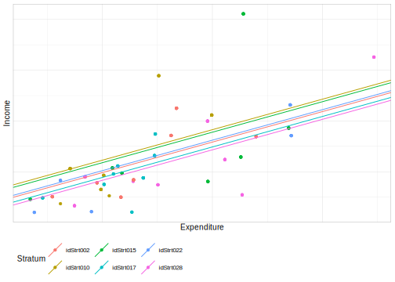
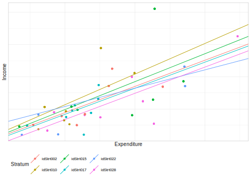

9.2 Estimación de pseudo máxima verosimilitud
EL método de máxima verosimilitud tiene como objetivo estimar los parámetros del modelo que maximizan la probabilidad de que se obtenga la muestra que de hecho se obtuvo. Es decir, los valores de los parámetros estimados deberían maximizar la probabilidad de elegir la muestra que se eligió para realizar el modelo . Lo anterior se realiza con la identificación de dichos valores muestrales mediante la comparación de los datos observados con los predichos por el modelo asociado a los valores de los parámetros. Cuanto más cerca estén entre sí los valores observados y predichos, mayor será la probabilidad de que los datos observados provengan de una población con parámetros cercanos a los utilizados para generar los valores predichos.
Existe una variante del método de máxima verosimilitud (MLE, por sus siglas en inglés) y es la máxima verosimilitud restringida (RMLE, por sus siglas en inglés), que ha demostrado ser más precisa con respecto a la estimación de parámetros de varianza que MLE (Kreft y De Leeuw, 1998). En particular, los dos métodos difieren con respecto a cómo se calculan los grados de libertad en la estimación de las varianzas.
En este sentido y como se ha definido en capítulos anteriores, la función de log-verosimilitud para la población está dada por:
\[ L_{U}\left(\theta\right)=\sum_{i\in U}\log\left[f\left(\boldsymbol{y}_{i};\theta\right)\right] \]
El estimador de máxima verosimilitud esta dada por:
\[ \frac{\partial L_{U}\left(\theta\right)}{\partial\theta}=0 \]
La dificultad que se encuentra aquí es transferir los pesos muéstrales a los niveles inferiores, por ejemplo de UPMs a estratos. Pfeffermann et al. (1998) argumentaron que, debido a la estructura de datos agrupados, ya no se asume que las observaciones sean independientes y que la probabilidad logarítmica se convierta en una suma entre los elementos de nivel uno y dos en lugar de una simple suma de las contribuciones de los elementos.
Pfeffermann et al. (1998) argumentaron que, debido a la estructura de datos agrupados, ya no se asume que las observaciones sean independientes y que la probabilidad logarítmica se convierta en una suma entre los elementos de nivel uno y dos en lugar de una simple suma de las contribuciones de los elementos.
Para ajustar los modelos multinivel en R se usará la función lmer() de la librería lme4.
A continuación se empezará a ejemplificar el ajuste de los modelos multinivel con encuestas complejas, iniciando con el ajuste de un modelo nulo.
Modelo Nulo
asuma que la información dentro del estrato está definida por el intercepto,
\[ Ingreso_{ij}=\beta_{0j}+\epsilon_{ij} \] \[ \beta_{1j} = \gamma_{10}+\gamma_{11}Stratum_{j} + \tau_{1j} \]
Como se mostró en capítulos anteriores, para tener estimaciones consistentes se calculan los pesos Qweighted siguiendo los pasos mostrados, tomando en este caso como covariables la edad del entrevistado, el sexo, la región y la zona donde reside. Adicionalmente, se calculan también los senate-weight para el ajuste de los modelos (Wk3, en el ajuste del modelo en R).
Al usar pesos para estimar los parámetros de los modelos, se debe tener en cuenta la naturaleza del diseño de muestreo. Particularmente, cuando se trata de estimaciones de parámetros multinivel, debe tener en cuenta no solo los pesos de la unidad de muestreo final sino también los primeros pesos de la unidad de muestreo. Por ejemplo, supongamos que tiene una muestra de estudiantes seleccionados de un marco nacional de escuelas. Luego, tenemos dos conjuntos de pesos, el primero con respecto a las escuelas (observe que una escuela seleccionada se representa así misma y a otros que no están en la muestra) y la segunda con respecto a los estudiantes. Para continuar con el ejemplo, supongamos también que en la población finita se tienen 10.000 estudiantes y 40 escuelas. Consideremos que se han seleccionado a 500 estudiantes asignados en 8 escuelas. En aras de la facilidad, pensemos que se usa una muestra aleatoria simple para seleccionar estudiantes. Si se tiene en cuenta solo los pesos del estudiante para que se ajusten al modelo multinivel, se encontrarán que está estimando parámetros con una muestra ampliada que representa a 10.000 estudiantes que se asignan en una muestra de solo ocho escuelas. Entonces, cualquier conclusión establecida será incorrecta. Por ejemplo, al realizar un análisis de varianza simple, el porcentaje de varianza explicado por las escuelas será extremadamente bajo. Ahora, si se tiene en cuenta ambos conjuntos de pesos (estudiantes y escuelas), se encontrará ajustando un modelo con muestras expandidas que representan 10.000 estudiantes y 40 escuelas, lo cual es lo correcto.
A continuación, se presentan los pesos de muestreos usados para el ajuste del modelo. Primero, se ajustará con los pesos que se tienen directamente del diseño muestral (Wk), los segundos son los pesos q-weigth (wk2) y los senate weigth (wk3).
mod_qw <- lm(wk ~ Age + Sex + Region + Zone,
data = encuesta)
encuesta$wk2 <- encuesta$wk/predict(mod_qw)
n = nrow(encuesta)
encuesta <- encuesta %>% mutate(wk3 = n*wk/sum(wk))
encuesta %>% summarise(fep = sum(wk),
q_wei = sum(wk2),
fep2 = sum(wk3) )| fep | q_wei | fep2 |
|---|---|---|
| 150266 | 2602 | 2605 |
A continuación, se presenta un gráfico comparando los pesos q-weigth y los senate weigth que se usarán para el ajuste del modelo multinivel:
ggplot(encuesta, aes(x = wk2, y = wk3)) +
geom_point() + theme_bw() +
labs(x = "q-weighted", y = "Alternativa")En este sentido, se realizarán los ajustes de los modelos utilizando los dos pesos mostrados anteriormente:
library(lme4)
mod_null <- lmer( Income ~ ( 1 | Stratum ),
data = encuesta,
weights = wk2 )
mod_null2 <- lmer( Income ~ ( 1 | Stratum ),
data = encuesta,
weights = wk3 )Comparando los modelos obtenidos:
coef_mod_null <- bind_cols(coef( mod_null )$Stratum,
coef(mod_null2 )$Stratum)
colnames(coef_mod_null) <- c("Intercept Mod 1",
"Intercept Mod 2")
coef_mod_null %>% slice(1:12)| Intercept Mod 1 | Intercept Mod 2 | |
|---|---|---|
| idStrt001 | 630.7 | 630.1 |
| idStrt002 | 505.4 | 506.2 |
| idStrt003 | 481.3 | 484.7 |
| idStrt004 | 959.6 | 954.5 |
| idStrt005 | 514.6 | 515.9 |
| idStrt006 | 433.8 | 438.2 |
| idStrt007 | 467.5 | 470.5 |
| idStrt008 | 371.6 | 376.4 |
| idStrt009 | 207.6 | 218.1 |
| idStrt010 | 591.6 | 592.1 |
| idStrt011 | 588.8 | 588.3 |
| idStrt012 | 352.0 | 361.2 |
Se puede observar que las estimaciones de los interceptos son similares utilizando los dos factores de expansión. Sin embargo, se debe tener en cuenta las características de cada metolodología.
Para efectos de ejemplificar el cálculo de la correlación intraclases, se utiliza la función icc de la librería performance. El cálculo es el siguiente:
| ICC_adjusted | ICC_unadjusted | optional |
|---|---|---|
| 0.3218 | 0.3218 | FALSE |
se puede observar que la correlación intraclase, utilizando el modelo nulo es del 32%. Por otro lado, como el modelo que se está ajustando es el “modelo nulo”, la predicción del ingreso dentro de los estrato es constante, como se muestra a continuación:
(tab_pred <- data.frame(Pred = predict(mod_null),
Income = encuesta$Income,
Stratum = encuesta$Stratum)) %>% distinct() %>%
slice(1:6L) # Son las pendientes aleatorias| Pred | Income | Stratum | |
|---|---|---|---|
| 1 | 630.7 | 409.87 | idStrt001 |
| 6 | 630.7 | 823.75 | idStrt001 |
| 10 | 630.7 | 90.92 | idStrt001 |
| 13 | 630.7 | 135.33 | idStrt001 |
| 18 | 630.7 | 336.19 | idStrt001 |
| 22 | 630.7 | 1539.75 | idStrt001 |
Como es bien sabido, si la predicción es correcta se espera estar sobre la línea de 45°. Naturalmente, en este caso eso no se obtiene y se puede verificar en la siguiente gráfica:
ggplot(data = tab_pred, aes(x = Pred, y = Income, colour = Stratum)) +
geom_point() + geom_abline(intercept = 0, slope = 1, colour = "red") +
theme_bw() + theme(legend.position = "none") 
Modelo con intercepto aleatoria
Un modelo con pendiente aleatoria es un tipo de modelo de regresión que permite que la relación entre la variable independiente y la variable dependiente cambie según alguna otra variable explicativa. En otras palabras, permite que la pendiente de la relación entre las variables sea diferente en diferentes grupos o subconjuntos de datos.
Por ejemplo, en un modelo de regresión lineal simple, la relación entre la variable independiente (X) y la variable dependiente (Y) se modela como una línea recta con una pendiente fija. Sin embargo, en un modelo con pendiente aleatoria, se permite que la pendiente varíe según otra variable explicativa, como el tiempo, la edad, el género, la ubicación geográfica, etc.
En este tipo de modelos, la relación entre X e Y no se asume como lineal, sino que se puede ajustar a una curva con diferentes pendientes para diferentes subgrupos. Los modelos con pendiente aleatoria son útiles en situaciones donde se espera que la relación entre las variables cambie de manera no lineal o cuando se desea modelar diferencias en la pendiente entre subgrupos. Consideremos el siguiente modelo:
\[ Ingreso_{ij}=\beta_{0}+\beta_{1j}Gasto_{ij}+\epsilon_{ij} \]
donde \(\beta_{1j}\) esta dado como
\[
\beta_{1j} = \gamma_{10}+\gamma_{11}Stratum_{j} + \tau_{1j}
\]
Para este caso en particular, se va a variar la pendiente de acuerdo con los estratos socioeconómicos. Para ajustar el modelo se utiliza la función lmer como se muestra a continuación:
mod_Int_Aleatorio <- lmer( Income ~ Expenditure + (1 | Stratum),
data = encuesta, weights = wk2)
performance::icc(mod_Int_Aleatorio)| ICC_adjusted | ICC_unadjusted | optional |
|---|---|---|
| 0.1958 | 0.1022 | FALSE |
Para cada estrato se tienen las siguientes estimaciones de \(\beta_{1j}\)
| (Intercept) | Expenditure | |
|---|---|---|
| idStrt001 | 248.257 | 1.202 |
| idStrt002 | 152.988 | 1.202 |
| idStrt003 | 139.765 | 1.202 |
| idStrt004 | 292.650 | 1.202 |
| idStrt005 | -42.165 | 1.202 |
| idStrt006 | 46.766 | 1.202 |
| idStrt007 | 2.841 | 1.202 |
| idStrt008 | 103.346 | 1.202 |
Organizando los coeficientes en un gráfico se tiene:
Coef_Estimado <- inner_join(
coef(mod_Int_Aleatorio)$Stratum %>%
add_rownames(var = "Stratum"),
encuesta_plot %>% dplyr::select(Stratum) %>% distinct())
ggplot(data = encuesta_plot,
aes(y = Income, x = Expenditure,
colour = Stratum)) +
geom_jitter() + theme(legend.position="none",
plot.title = element_text(hjust = 0.5)) +
geom_abline(data = Coef_Estimado,
mapping=aes(slope=Expenditure,
intercept=`(Intercept)`,
colour = Stratum))+
theme_cepal() Se puede observar que, la estimación de la pendiente varía de manera importante para cada uno de los estratos, por tanto, el ajuste del modelo con pendiente aleatoria es adecuado.
Por otro lado, la predicción de los ingresos usando este modelo se muestra a continuación:
(tab_pred <- data.frame(
Pred = predict(mod_Int_Aleatorio),
Income = encuesta$Income,
Stratum = encuesta$Stratum)) %>% distinct() %>%
slice(1:6L) | Pred | Income | Stratum | |
|---|---|---|---|
| 1 | 664.4 | 409.87 | idStrt001 |
| 6 | 719.6 | 823.75 | idStrt001 |
| 10 | 337.3 | 90.92 | idStrt001 |
| 13 | 348.9 | 135.33 | idStrt001 |
| 18 | 560.9 | 336.19 | idStrt001 |
| 22 | 890.5 | 1539.75 | idStrt001 |
Gráficamente se muestran las estimaciones versus los valores estimados de los ingresos y se logra observar que la predicción está más cerca a la línea de 45 grados que el modelo anterior.
ggplot(data = tab_pred, aes(x = Pred, y = Income, colour = Stratum)) +
geom_point() + geom_abline(intercept = 0, slope = 1, colour = "red") +
theme_bw() + theme(legend.position = "none") Modelo con intercepto y pendiente aleatoria
Los modelos con intercepto y pendiente aleatoria, también conocidos como modelos mixtos de efectos mixtos o modelos de regresión lineal mixta, son un tipo de modelo estadístico que permite modelar la relación entre una variable de respuesta y una o más variables predictoras, teniendo en cuenta tanto efectos fijos como efectos aleatorios.
En los modelos con intercepto y pendiente aleatoria, los coeficientes de la regresión (es decir, la pendiente y el intercepto) se consideran aleatorios en lugar de fijos. Esto significa que se asume que estos coeficientes pueden variar entre las unidades de análisis, que pueden ser individuos, grupos, regiones geográficas, etc. Estas variaciones se modelan como efectos aleatorios que se incorporan en la ecuación de regresión.
Los modelos con intercepto y pendiente aleatoria son útiles cuando se trabaja con datos que tienen una estructura jerárquica o de agrupamiento, donde las unidades de análisis están agrupadas en diferentes niveles. Por ejemplo, en un estudio sobre el rendimiento académico de los estudiantes, las unidades de análisis pueden ser los estudiantes y las escuelas a las que asisten. En este caso, se puede modelar tanto la variación entre los estudiantes como la variación entre las escuelas en la relación entre el rendimiento académico y los predictores.
Estos modelos son ampliamente utilizados en diversas áreas, como la psicología, la medicina, la sociología, la economía, la biología y la ecología, entre otras.
Para la ejemplificación, consideremos el siguiente modelo: \[ Ingreso_{ij}=\beta_{0j}+\beta_{1j}Gasto_{ij}+\epsilon_{ij} \] donde,
\[ \beta_{0j} = \gamma_{00}+\gamma_{01}Stratum_{j} + \tau_{0j} \] y,
\[
\beta_{1j} = \gamma_{10}+\gamma_{11}Stratum_{j} + \tau_{1j}
\]
El ajuste del modelo se realiza utilizando la función lmer como se presenta a continuación:
mod_Pen_Aleatorio <- lmer(Income ~ Expenditure + (1 + Expenditure| Stratum),
data = encuesta, weights = wk2)
performance::icc(mod_Pen_Aleatorio)| ICC_adjusted | ICC_unadjusted | optional |
|---|---|---|
| 0.6971 | 0.4598 | FALSE |
Los coeficientes del modelo son:
| (Intercept) | Expenditure | |
|---|---|---|
| idStrt001 | -230.63 | 2.7761 |
| idStrt002 | 31.07 | 1.6236 |
| idStrt003 | 152.51 | 1.1621 |
| idStrt004 | 230.80 | 1.3452 |
| idStrt005 | -97.05 | 1.2964 |
| idStrt006 | 30.34 | 1.2039 |
| idStrt007 | 37.63 | 1.0771 |
| idStrt008 | 167.70 | 0.9018 |
| idStrt009 | 30.46 | 0.7488 |
| idStrt010 | 74.87 | 1.8971 |
Gráficamente,
Coef_Estimado <- inner_join(
coef(mod_Pen_Aleatorio)$Stratum %>%
add_rownames(var = "Stratum"),
encuesta_plot %>% dplyr::select(Stratum) %>% distinct())
ggplot(data = encuesta_plot,
aes(y = Income, x = Expenditure,
colour = Stratum)) +
geom_jitter() + theme(legend.position="none",
plot.title = element_text(hjust = 0.5)) +
geom_abline(data = Coef_Estimado,
mapping=aes(slope=Expenditure,
intercept=`(Intercept)`,
colour = Stratum))+
theme_cepal()
Como se pudo observar en la gráfica anterior y en el coeficiente de correlación intraclase, el ajuste del modelo con intercepto y pendiente aleatoria se ajusta mejor a los datos que los otros dos modelos mostrados anteriormente.
A continuación, se realizan las predicciones de los ingresos con el modelo:
(tab_pred <- data.frame(Pred = predict(mod_Pen_Aleatorio),
Income = encuesta$Income,
Stratum = encuesta$Stratum)) %>% distinct() %>%
slice(1:6L) # Son las pendientes aleatorias| Pred | Income | Stratum | |
|---|---|---|---|
| 1 | 730.855 | 409.87 | idStrt001 |
| 6 | 858.279 | 823.75 | idStrt001 |
| 10 | -25.002 | 90.92 | idStrt001 |
| 13 | 1.982 | 135.33 | idStrt001 |
| 18 | 491.663 | 336.19 | idStrt001 |
| 22 | 1253.017 | 1539.75 | idStrt001 |
Para poder ver qué tan buena son las predicciones, se realiza el siguiente gráfico:
ggplot(data = tab_pred, aes(x = Pred, y = Income, colour = Stratum)) +
geom_point() + geom_abline(intercept = 0, slope = 1, colour = "red") +
theme_bw() + theme(legend.position = "none") Del anterior gráfico se logra observar que las predicciones del ingreso son mejores que las realizadas con los dos modelos anteriores. Lo anterior se debe a la naturaleza misma de los datos en una encuesta de hogares.
Ahora bien, para robustecer el modelo, se ajusta nuevamente, pero agregando la variable zona como se muestra a continuación:
\[ Ingreso_{ij}=\beta_{0j}+\beta_{1j}Gasto_{ij}+\beta_{2j}Zona_{ij} +\epsilon_{ij} \] Donde,
\[ \beta_{0j} = \gamma_{00}+\gamma_{01}Stratum_{j} + \gamma_{02}\mu_{j} + \tau_{0j} \] y,
\[ \beta_{1j} = \gamma_{10}+\gamma_{11}Stratum_{j} + \gamma_{12}\mu_{j} + \tau_{1j} \]
\[ \beta_{2j} = \gamma_{20}+\gamma_{21}Stratum_{j} + \gamma_{12}\mu_{j} + \tau_{2j} \]
donde \(\mu_{j}\) es el gasto medio de los hogares en el estrato \(j\). En R el ajuste se hace de la siguiente manera:
media_estrato <- encuesta %>% group_by(Stratum) %>%
summarise(mu = mean(Expenditure))
encuesta <- inner_join(encuesta, media_estrato, by = "Stratum")
mod_Pen_Aleatorio2 <- lmer(Income ~ 1 + Expenditure + Zone + mu +
(1 + Expenditure + Zone + mu | Stratum ),
data = encuesta, weights = wk2)calculando las predicciones de los ingresos de los hogares por estrato:
(tab_pred <- data.frame(Pred = predict(mod_Pen_Aleatorio2),
Income = encuesta$Income,
Stratum = encuesta$Stratum)) %>% distinct() %>%
slice(1:6L)| Pred | Income | Stratum | |
|---|---|---|---|
| 1 | 728.163 | 409.87 | idStrt001 |
| 6 | 854.365 | 823.75 | idStrt001 |
| 10 | -20.446 | 90.92 | idStrt001 |
| 13 | 6.279 | 135.33 | idStrt001 |
| 18 | 491.265 | 336.19 | idStrt001 |
| 22 | 1245.318 | 1539.75 | idStrt001 |
Por último, haciendo el gráfico de las predicciones con los datos observados observándose que el ajuste de este modelo es levemente mejor que el que no incluye la variable zona.
ggplot(data = tab_pred, aes(x = Pred, y = Income, colour = Stratum)) +
geom_point() + geom_abline(intercept = 0, slope = 1, colour = "red") +
theme_bw() + theme(legend.position = "none") A continuación, se presentan todos los componentes que se requieren para escribir el modelo ajustado. Inicialmente, se calcula la matriz diseño:
| (Intercept) | Expenditure | ZoneUrban | mu | |
|---|---|---|---|---|
| 1 | 1 | 346.34 | 0 | 303.3 |
| 6 | 1 | 392.24 | 0 | 303.3 |
| 10 | 1 | 74.07 | 0 | 303.3 |
| 13 | 1 | 83.79 | 0 | 303.3 |
| 18 | 1 | 260.18 | 0 | 303.3 |
| 22 | 1 | 534.43 | 0 | 303.3 |
| 28 | 1 | 256.74 | 1 | 286.2 |
| 32 | 1 | 233.69 | 1 | 286.2 |
| 36 | 1 | 324.97 | 1 | 286.2 |
| 41 | 1 | 334.75 | 1 | 286.2 |
| 46 | 1 | 109.00 | 1 | 286.2 |
| 51 | 1 | 190.27 | 1 | 286.2 |
| 55 | 1 | 479.55 | 1 | 286.2 |
| 61 | 1 | 108.34 | 0 | 270.3 |
| 64 | 1 | 238.34 | 0 | 270.3 |
| 68 | 1 | 451.59 | 0 | 270.3 |
| 73 | 1 | 207.94 | 0 | 270.3 |
| 76 | 1 | 236.24 | 0 | 270.3 |
| 80 | 1 | 278.17 | 0 | 270.3 |
| 84 | 1 | 383.93 | 1 | 569.0 |
| 88 | 1 | 733.67 | 1 | 569.0 |
| 92 | 1 | 982.88 | 1 | 569.0 |
| 95 | 1 | 492.00 | 1 | 569.0 |
| 98 | 1 | 259.14 | 1 | 569.0 |
| 101 | 1 | 555.88 | 0 | 486.1 |
| 105 | 1 | 420.02 | 0 | 486.1 |
| 109 | 1 | 796.05 | 0 | 486.1 |
| 116 | 1 | 463.88 | 0 | 486.1 |
| 126 | 1 | 240.70 | 0 | 486.1 |
| 134 | 1 | 313.90 | 1 | 321.0 |
| 138 | 1 | 120.23 | 1 | 321.0 |
| 139 | 1 | 223.03 | 1 | 321.0 |
| 143 | 1 | 474.20 | 1 | 321.0 |
| 151 | 1 | 119.81 | 1 | 321.0 |
| 154 | 1 | 28.51 | 0 | 376.7 |
| 157 | 1 | 853.57 | 0 | 376.7 |
| 161 | 1 | 109.46 | 0 | 376.7 |
| 163 | 1 | 520.14 | 0 | 376.7 |
| 165 | 1 | 68.98 | 0 | 376.7 |
| 167 | 1 | 144.99 | 1 | 206.4 |
| 171 | 1 | 93.71 | 1 | 206.4 |
| 177 | 1 | 64.84 | 1 | 206.4 |
| 179 | 1 | 376.18 | 1 | 206.4 |
| 183 | 1 | 132.91 | 1 | 206.4 |
| 184 | 1 | 326.18 | 1 | 206.4 |
| 189 | 1 | 59.68 | 0 | 215.9 |
| 192 | 1 | 376.75 | 0 | 215.9 |
| 197 | 1 | 167.66 | 0 | 215.9 |
| 202 | 1 | 329.07 | 0 | 215.9 |
| 208 | 1 | 140.99 | 0 | 215.9 |
| 213 | 1 | 82.71 | 0 | 215.9 |
| 216 | 1 | 197.36 | 1 | 255.8 |
| 220 | 1 | 302.51 | 1 | 255.8 |
| 223 | 1 | 202.45 | 1 | 255.8 |
| 226 | 1 | 398.71 | 1 | 255.8 |
| 233 | 1 | 141.48 | 1 | 255.8 |
| 238 | 1 | 212.50 | 1 | 255.8 |
| 239 | 1 | 123.80 | 1 | 255.8 |
| 240 | 1 | 862.81 | 0 | 483.0 |
| 244 | 1 | 229.26 | 0 | 483.0 |
| 250 | 1 | 628.40 | 0 | 483.0 |
| 257 | 1 | 178.52 | 0 | 483.0 |
| 259 | 1 | 402.06 | 0 | 483.0 |
| 264 | 1 | 325.49 | 1 | 245.0 |
| 266 | 1 | 95.74 | 1 | 245.0 |
| 267 | 1 | 115.42 | 1 | 245.0 |
| 269 | 1 | 277.43 | 1 | 245.0 |
| 271 | 1 | 320.50 | 1 | 245.0 |
| 275 | 1 | 125.28 | 1 | 245.0 |
| 276 | 1 | 497.55 | 0 | 361.9 |
| 286 | 1 | 271.28 | 0 | 361.9 |
| 289 | 1 | 227.36 | 0 | 361.9 |
| 293 | 1 | 132.85 | 0 | 361.9 |
| 296 | 1 | 492.37 | 0 | 361.9 |
| 302 | 1 | 233.50 | 0 | 361.9 |
| 307 | 1 | 719.16 | 1 | 482.1 |
| 310 | 1 | 376.79 | 1 | 482.1 |
| 312 | 1 | 243.75 | 1 | 482.1 |
| 314 | 1 | 904.78 | 1 | 482.1 |
| 319 | 1 | 189.24 | 1 | 482.1 |
| 322 | 1 | 230.27 | 1 | 482.1 |
| 327 | 1 | 538.66 | 0 | 357.0 |
| 332 | 1 | 218.20 | 0 | 357.0 |
| 337 | 1 | 456.25 | 0 | 357.0 |
| 342 | 1 | 451.70 | 0 | 357.0 |
| 346 | 1 | 68.97 | 0 | 357.0 |
| 349 | 1 | 235.59 | 0 | 357.0 |
| 352 | 1 | 391.82 | 0 | 357.0 |
| 356 | 1 | 117.33 | 1 | 334.0 |
| 357 | 1 | 436.66 | 1 | 334.0 |
| 359 | 1 | 467.95 | 1 | 334.0 |
| 363 | 1 | 119.16 | 1 | 334.0 |
| 364 | 1 | 317.60 | 1 | 334.0 |
| 367 | 1 | 203.95 | 1 | 334.0 |
| 369 | 1 | 296.15 | 0 | 244.8 |
| 373 | 1 | 294.81 | 0 | 244.8 |
| 379 | 1 | 253.68 | 0 | 244.8 |
| 381 | 1 | 220.17 | 0 | 244.8 |
| 383 | 1 | 228.06 | 0 | 244.8 |
| 387 | 1 | 203.12 | 0 | 244.8 |
| 390 | 1 | 91.42 | 0 | 244.8 |
| 393 | 1 | 274.38 | 0 | 244.8 |
| 399 | 1 | 421.27 | 1 | 376.3 |
| 405 | 1 | 330.54 | 1 | 376.3 |
| 407 | 1 | 398.10 | 1 | 376.3 |
| 411 | 1 | 313.67 | 1 | 376.3 |
| 414 | 1 | 379.96 | 1 | 376.3 |
| 416 | 1 | 333.83 | 1 | 376.3 |
| 418 | 1 | 156.71 | 0 | 305.8 |
| 424 | 1 | 540.66 | 0 | 305.8 |
| 435 | 1 | 144.88 | 0 | 305.8 |
| 438 | 1 | 583.90 | 0 | 305.8 |
| 442 | 1 | 301.06 | 0 | 305.8 |
| 445 | 1 | 238.03 | 1 | 553.7 |
| 448 | 1 | 402.60 | 1 | 553.7 |
| 456 | 1 | 447.85 | 1 | 553.7 |
| 461 | 1 | 1348.56 | 1 | 553.7 |
| 465 | 1 | 141.40 | 0 | 127.2 |
| 467 | 1 | 119.50 | 0 | 127.2 |
| 471 | 1 | 74.83 | 0 | 127.2 |
| 474 | 1 | 96.00 | 0 | 127.2 |
| 475 | 1 | 192.33 | 0 | 127.2 |
| 478 | 1 | 125.17 | 0 | 127.2 |
| 480 | 1 | 543.36 | 1 | 524.0 |
| 484 | 1 | 123.76 | 1 | 524.0 |
| 487 | 1 | 76.31 | 1 | 524.0 |
| 489 | 1 | 541.50 | 1 | 524.0 |
| 493 | 1 | 180.18 | 1 | 524.0 |
| 495 | 1 | 712.67 | 1 | 524.0 |
| 498 | 1 | 1041.83 | 1 | 524.0 |
| 502 | 1 | 124.25 | 0 | 188.0 |
| 505 | 1 | 380.66 | 0 | 188.0 |
| 511 | 1 | 130.84 | 0 | 188.0 |
| 512 | 1 | 172.93 | 0 | 188.0 |
| 516 | 1 | 91.83 | 0 | 188.0 |
| 522 | 1 | 154.64 | 0 | 188.0 |
| 530 | 1 | 185.75 | 0 | 188.0 |
| 531 | 1 | 246.33 | 1 | 389.3 |
| 535 | 1 | 296.07 | 1 | 389.3 |
| 538 | 1 | 222.35 | 1 | 389.3 |
| 542 | 1 | 87.29 | 1 | 389.3 |
| 543 | 1 | 938.25 | 1 | 389.3 |
| 548 | 1 | 204.71 | 1 | 389.3 |
| 553 | 1 | 293.31 | 0 | 259.0 |
| 557 | 1 | 89.85 | 0 | 259.0 |
| 558 | 1 | 213.39 | 0 | 259.0 |
| 561 | 1 | 295.43 | 0 | 259.0 |
| 567 | 1 | 414.46 | 0 | 259.0 |
| 570 | 1 | 129.85 | 0 | 259.0 |
| 574 | 1 | 160.82 | 1 | 334.1 |
| 576 | 1 | 219.45 | 1 | 334.1 |
| 578 | 1 | 177.59 | 1 | 334.1 |
| 582 | 1 | 179.17 | 1 | 334.1 |
| 584 | 1 | 636.34 | 1 | 334.1 |
| 589 | 1 | 98.65 | 0 | 249.8 |
| 592 | 1 | 301.72 | 0 | 249.8 |
| 599 | 1 | 303.73 | 0 | 249.8 |
| 603 | 1 | 329.32 | 0 | 249.8 |
| 604 | 1 | 163.09 | 0 | 249.8 |
| 607 | 1 | 277.55 | 0 | 249.8 |
| 609 | 1 | 149.28 | 1 | 337.1 |
| 613 | 1 | 422.71 | 1 | 337.1 |
| 617 | 1 | 693.61 | 1 | 337.1 |
| 620 | 1 | 300.97 | 1 | 337.1 |
| 623 | 1 | 256.02 | 1 | 337.1 |
| 625 | 1 | 454.13 | 1 | 337.1 |
| 628 | 1 | 391.25 | 1 | 337.1 |
| 633 | 1 | 168.52 | 1 | 337.1 |
| 639 | 1 | 331.67 | 0 | 238.7 |
| 643 | 1 | 169.60 | 0 | 238.7 |
| 645 | 1 | 262.26 | 0 | 238.7 |
| 649 | 1 | 116.56 | 0 | 238.7 |
| 653 | 1 | 90.94 | 0 | 238.7 |
| 655 | 1 | 314.83 | 0 | 238.7 |
| 661 | 1 | 115.19 | 1 | 282.4 |
| 663 | 1 | 242.92 | 1 | 282.4 |
| 667 | 1 | 309.83 | 1 | 282.4 |
| 671 | 1 | 261.93 | 1 | 282.4 |
| 675 | 1 | 202.87 | 1 | 282.4 |
| 678 | 1 | 399.54 | 1 | 282.4 |
| 684 | 1 | 123.62 | 0 | 263.8 |
| 685 | 1 | 385.49 | 0 | 263.8 |
| 688 | 1 | 314.09 | 0 | 263.8 |
| 691 | 1 | 342.38 | 0 | 263.8 |
| 701 | 1 | 174.96 | 0 | 263.8 |
| 705 | 1 | 129.47 | 0 | 263.8 |
| 711 | 1 | 123.17 | 1 | 455.2 |
| 712 | 1 | 595.53 | 1 | 455.2 |
| 715 | 1 | 315.00 | 1 | 455.2 |
| 716 | 1 | 138.07 | 1 | 455.2 |
| 719 | 1 | 576.54 | 1 | 455.2 |
| 722 | 1 | 614.68 | 1 | 455.2 |
| 726 | 1 | 304.99 | 0 | 218.1 |
| 731 | 1 | 255.87 | 0 | 218.1 |
| 735 | 1 | 239.59 | 0 | 218.1 |
| 739 | 1 | 96.40 | 0 | 218.1 |
| 744 | 1 | 124.90 | 0 | 218.1 |
| 746 | 1 | 258.01 | 0 | 218.1 |
| 753 | 1 | 165.96 | 0 | 218.1 |
| 756 | 1 | 132.19 | 1 | 335.5 |
| 760 | 1 | 221.19 | 1 | 335.5 |
| 764 | 1 | 323.83 | 1 | 335.5 |
| 768 | 1 | 160.73 | 1 | 335.5 |
| 771 | 1 | 663.81 | 1 | 335.5 |
| 775 | 1 | 416.28 | 1 | 335.5 |
| 778 | 1 | 407.22 | 1 | 335.5 |
| 782 | 1 | 209.71 | 0 | 321.9 |
| 792 | 1 | 405.61 | 0 | 321.9 |
| 802 | 1 | 326.32 | 0 | 321.9 |
| 805 | 1 | 342.52 | 0 | 321.9 |
| 810 | 1 | 377.90 | 0 | 321.9 |
| 813 | 1 | 1530.50 | 1 | 686.4 |
| 818 | 1 | 142.61 | 1 | 686.4 |
| 819 | 1 | 935.17 | 1 | 686.4 |
| 822 | 1 | 273.74 | 1 | 686.4 |
| 824 | 1 | 77.81 | 1 | 686.4 |
| 825 | 1 | 245.40 | 1 | 686.4 |
| 830 | 1 | 555.77 | 1 | 686.4 |
| 836 | 1 | 220.67 | 0 | 402.2 |
| 839 | 1 | 525.84 | 0 | 402.2 |
| 845 | 1 | 254.35 | 0 | 402.2 |
| 849 | 1 | 215.09 | 0 | 402.2 |
| 853 | 1 | 172.29 | 0 | 402.2 |
| 856 | 1 | 568.83 | 0 | 402.2 |
| 867 | 1 | 492.63 | 1 | 505.9 |
| 871 | 1 | 287.21 | 1 | 505.9 |
| 872 | 1 | 526.77 | 1 | 505.9 |
| 874 | 1 | 639.26 | 1 | 505.9 |
| 879 | 1 | 667.66 | 1 | 505.9 |
| 884 | 1 | 272.24 | 1 | 505.9 |
| 887 | 1 | 233.79 | 1 | 505.9 |
| 889 | 1 | 3367.53 | 1 | 1311.6 |
| 892 | 1 | 312.13 | 1 | 1311.6 |
| 896 | 1 | 226.50 | 1 | 1311.6 |
| 898 | 1 | 71.05 | 0 | 342.6 |
| 900 | 1 | 440.57 | 0 | 342.6 |
| 904 | 1 | 516.79 | 0 | 342.6 |
| 906 | 1 | 166.56 | 0 | 342.6 |
| 908 | 1 | 402.71 | 0 | 342.6 |
| 912 | 1 | 321.24 | 0 | 342.6 |
| 916 | 1 | 418.53 | 1 | 370.9 |
| 918 | 1 | 560.13 | 1 | 370.9 |
| 923 | 1 | 282.76 | 1 | 370.9 |
| 927 | 1 | 242.68 | 1 | 370.9 |
| 931 | 1 | 91.33 | 1 | 370.9 |
| 933 | 1 | 516.67 | 1 | 370.9 |
| 937 | 1 | 171.67 | 1 | 370.9 |
| 938 | 1 | 567.89 | 0 | 517.1 |
| 943 | 1 | 380.40 | 0 | 517.1 |
| 948 | 1 | 437.62 | 0 | 517.1 |
| 952 | 1 | 308.07 | 0 | 517.1 |
| 956 | 1 | 912.84 | 0 | 517.1 |
| 960 | 1 | 322.27 | 1 | 359.9 |
| 965 | 1 | 380.67 | 1 | 359.9 |
| 967 | 1 | 349.11 | 1 | 359.9 |
| 971 | 1 | 371.38 | 1 | 359.9 |
| 976 | 1 | 454.20 | 1 | 359.9 |
| 983 | 1 | 172.72 | 1 | 359.9 |
| 985 | 1 | 282.56 | 1 | 359.9 |
| 987 | 1 | 223.55 | 0 | 224.4 |
| 995 | 1 | 147.35 | 0 | 224.4 |
| 999 | 1 | 288.59 | 0 | 224.4 |
| 1007 | 1 | 220.72 | 0 | 224.4 |
| 1011 | 1 | 41.26 | 0 | 224.4 |
| 1012 | 1 | 559.33 | 1 | 311.0 |
| 1016 | 1 | 217.71 | 1 | 311.0 |
| 1018 | 1 | 129.08 | 1 | 311.0 |
| 1019 | 1 | 484.33 | 1 | 311.0 |
| 1021 | 1 | 241.66 | 1 | 311.0 |
| 1035 | 1 | 152.06 | 0 | 364.2 |
| 1038 | 1 | 255.48 | 0 | 364.2 |
| 1043 | 1 | 604.25 | 0 | 364.2 |
| 1049 | 1 | 277.41 | 0 | 364.2 |
| 1052 | 1 | 616.32 | 1 | 1124.8 |
| 1055 | 1 | 1385.65 | 1 | 1124.8 |
| 1059 | 1 | 245.28 | 1 | 1124.8 |
| 1063 | 1 | 1791.50 | 1 | 1124.8 |
| 1069 | 1 | 137.27 | 0 | 199.8 |
| 1072 | 1 | 94.66 | 0 | 199.8 |
| 1074 | 1 | 181.66 | 0 | 199.8 |
| 1075 | 1 | 158.54 | 0 | 199.8 |
| 1077 | 1 | 449.20 | 0 | 199.8 |
| 1079 | 1 | 398.27 | 1 | 706.2 |
| 1084 | 1 | 364.26 | 1 | 706.2 |
| 1088 | 1 | 509.08 | 1 | 706.2 |
| 1095 | 1 | 1053.00 | 1 | 706.2 |
| 1099 | 1 | 1431.41 | 1 | 706.2 |
| 1103 | 1 | 305.82 | 0 | 301.7 |
| 1108 | 1 | 58.25 | 0 | 301.7 |
| 1110 | 1 | 183.36 | 0 | 301.7 |
| 1112 | 1 | 407.40 | 0 | 301.7 |
| 1120 | 1 | 336.90 | 0 | 301.7 |
| 1125 | 1 | 221.86 | 0 | 301.7 |
| 1129 | 1 | 112.09 | 1 | 213.0 |
| 1131 | 1 | 307.20 | 1 | 213.0 |
| 1135 | 1 | 231.25 | 1 | 213.0 |
| 1138 | 1 | 191.77 | 1 | 213.0 |
| 1141 | 1 | 162.08 | 1 | 213.0 |
| 1143 | 1 | 148.33 | 1 | 213.0 |
| 1144 | 1 | 264.78 | 0 | 367.2 |
| 1152 | 1 | 210.43 | 0 | 367.2 |
| 1156 | 1 | 984.08 | 0 | 367.2 |
| 1160 | 1 | 237.22 | 0 | 367.2 |
| 1165 | 1 | 274.55 | 0 | 367.2 |
| 1169 | 1 | 403.28 | 1 | 340.3 |
| 1172 | 1 | 290.73 | 1 | 340.3 |
| 1175 | 1 | 439.26 | 1 | 340.3 |
| 1180 | 1 | 112.06 | 1 | 340.3 |
| 1181 | 1 | 242.05 | 1 | 340.3 |
| 1182 | 1 | 236.34 | 1 | 340.3 |
| 1184 | 1 | 416.35 | 1 | 419.8 |
| 1188 | 1 | 452.00 | 1 | 419.8 |
| 1191 | 1 | 396.57 | 1 | 419.8 |
| 1192 | 1 | 377.49 | 1 | 419.8 |
| 1193 | 1 | 415.43 | 1 | 419.8 |
| 1197 | 1 | 776.23 | 1 | 527.1 |
| 1199 | 1 | 383.07 | 1 | 527.1 |
| 1201 | 1 | 259.07 | 1 | 527.1 |
| 1204 | 1 | 675.53 | 1 | 527.1 |
| 1208 | 1 | 262.04 | 1 | 386.3 |
| 1211 | 1 | 200.33 | 1 | 386.3 |
| 1212 | 1 | 371.04 | 1 | 386.3 |
| 1215 | 1 | 570.77 | 1 | 386.3 |
| 1217 | 1 | 433.46 | 1 | 386.3 |
| 1222 | 1 | 830.90 | 1 | 445.3 |
| 1225 | 1 | 257.00 | 1 | 445.3 |
| 1227 | 1 | 250.20 | 1 | 445.3 |
| 1231 | 1 | 268.25 | 1 | 346.4 |
| 1232 | 1 | 407.97 | 1 | 346.4 |
| 1236 | 1 | 381.56 | 1 | 346.4 |
| 1239 | 1 | 343.00 | 1 | 346.4 |
| 1244 | 1 | 343.99 | 1 | 346.4 |
| 1249 | 1 | 297.27 | 1 | 346.4 |
| 1254 | 1 | 281.26 | 0 | 233.9 |
| 1258 | 1 | 256.92 | 0 | 233.9 |
| 1260 | 1 | 380.08 | 0 | 233.9 |
| 1263 | 1 | 185.74 | 0 | 233.9 |
| 1266 | 1 | 105.79 | 0 | 233.9 |
| 1272 | 1 | 85.18 | 1 | 442.3 |
| 1274 | 1 | 285.13 | 1 | 442.3 |
| 1278 | 1 | 282.25 | 1 | 442.3 |
| 1283 | 1 | 622.50 | 1 | 442.3 |
| 1288 | 1 | 856.20 | 1 | 442.3 |
| 1291 | 1 | 344.24 | 0 | 290.0 |
| 1294 | 1 | 402.75 | 0 | 290.0 |
| 1299 | 1 | 233.12 | 0 | 290.0 |
| 1304 | 1 | 79.20 | 0 | 290.0 |
| 1310 | 1 | 303.00 | 0 | 290.0 |
| 1314 | 1 | 529.55 | 1 | 637.7 |
| 1318 | 1 | 315.60 | 1 | 637.7 |
| 1322 | 1 | 334.90 | 1 | 637.7 |
| 1328 | 1 | 209.62 | 1 | 637.7 |
| 1331 | 1 | 532.26 | 1 | 637.7 |
| 1339 | 1 | 1267.11 | 1 | 637.7 |
| 1348 | 1 | 891.51 | 1 | 648.7 |
| 1353 | 1 | 184.79 | 1 | 648.7 |
| 1361 | 1 | 812.17 | 1 | 648.7 |
| 1364 | 1 | 139.67 | 1 | 648.7 |
| 1367 | 1 | 295.20 | 0 | 393.9 |
| 1372 | 1 | 569.67 | 0 | 393.9 |
| 1383 | 1 | 256.05 | 0 | 393.9 |
| 1386 | 1 | 175.96 | 0 | 393.9 |
| 1389 | 1 | 446.70 | 0 | 393.9 |
| 1393 | 1 | 102.69 | 0 | 393.9 |
| 1395 | 1 | 726.16 | 1 | 429.5 |
| 1399 | 1 | 443.82 | 1 | 429.5 |
| 1401 | 1 | 475.36 | 1 | 429.5 |
| 1405 | 1 | 254.42 | 1 | 429.5 |
| 1409 | 1 | 80.52 | 1 | 429.5 |
| 1411 | 1 | 894.26 | 1 | 944.4 |
| 1413 | 1 | 514.84 | 1 | 944.4 |
| 1416 | 1 | 1412.17 | 1 | 944.4 |
| 1420 | 1 | 974.53 | 1 | 944.4 |
| 1428 | 1 | 799.96 | 1 | 944.4 |
| 1433 | 1 | 244.15 | 0 | 448.7 |
| 1437 | 1 | 132.73 | 0 | 448.7 |
| 1442 | 1 | 188.33 | 0 | 448.7 |
| 1444 | 1 | 442.43 | 0 | 448.7 |
| 1449 | 1 | 947.68 | 0 | 448.7 |
| 1456 | 1 | 312.87 | 0 | 448.7 |
| 1460 | 1 | 332.09 | 1 | 462.0 |
| 1463 | 1 | 471.45 | 1 | 462.0 |
| 1467 | 1 | 221.38 | 1 | 462.0 |
| 1472 | 1 | 480.97 | 1 | 462.0 |
| 1478 | 1 | 606.00 | 1 | 462.0 |
| 1488 | 1 | 330.08 | 1 | 558.1 |
| 1491 | 1 | 680.34 | 1 | 558.1 |
| 1496 | 1 | 636.47 | 1 | 558.1 |
| 1505 | 1 | 346.98 | 1 | 558.1 |
| 1508 | 1 | 377.67 | 0 | 378.3 |
| 1511 | 1 | 298.31 | 0 | 378.3 |
| 1515 | 1 | 468.38 | 0 | 378.3 |
| 1519 | 1 | 393.58 | 0 | 378.3 |
| 1522 | 1 | 338.80 | 0 | 378.3 |
| 1526 | 1 | 402.56 | 0 | 378.3 |
| 1529 | 1 | 292.17 | 1 | 278.0 |
| 1532 | 1 | 245.64 | 1 | 278.0 |
| 1536 | 1 | 274.80 | 1 | 278.0 |
| 1538 | 1 | 324.62 | 1 | 278.0 |
| 1540 | 1 | 300.50 | 0 | 244.4 |
| 1544 | 1 | 335.06 | 0 | 244.4 |
| 1547 | 1 | 86.95 | 0 | 244.4 |
| 1549 | 1 | 143.80 | 0 | 244.4 |
| 1553 | 1 | 295.93 | 0 | 244.4 |
| 1556 | 1 | 241.27 | 0 | 244.4 |
| 1558 | 1 | 262.50 | 0 | 244.4 |
| 1562 | 1 | 429.52 | 1 | 482.0 |
| 1567 | 1 | 709.45 | 1 | 482.0 |
| 1569 | 1 | 769.80 | 1 | 482.0 |
| 1573 | 1 | 258.00 | 1 | 482.0 |
| 1579 | 1 | 160.42 | 0 | 181.3 |
| 1583 | 1 | 140.52 | 0 | 181.3 |
| 1586 | 1 | 173.08 | 0 | 181.3 |
| 1588 | 1 | 122.07 | 0 | 181.3 |
| 1590 | 1 | 130.44 | 0 | 181.3 |
| 1592 | 1 | 196.96 | 0 | 181.3 |
| 1594 | 1 | 283.86 | 0 | 181.3 |
| 1598 | 1 | 425.13 | 1 | 312.4 |
| 1602 | 1 | 222.33 | 1 | 312.4 |
| 1610 | 1 | 138.00 | 1 | 312.4 |
| 1611 | 1 | 258.23 | 1 | 312.4 |
| 1614 | 1 | 244.34 | 1 | 312.4 |
| 1617 | 1 | 537.50 | 0 | 381.3 |
| 1623 | 1 | 365.90 | 0 | 381.3 |
| 1624 | 1 | 237.00 | 0 | 381.3 |
| 1629 | 1 | 123.50 | 0 | 381.3 |
| 1630 | 1 | 395.68 | 0 | 381.3 |
| 1634 | 1 | 289.63 | 1 | 368.1 |
| 1638 | 1 | 537.50 | 1 | 368.1 |
| 1643 | 1 | 374.15 | 1 | 368.1 |
| 1645 | 1 | 299.92 | 1 | 368.1 |
| 1653 | 1 | 447.18 | 0 | 312.9 |
| 1657 | 1 | 116.44 | 0 | 312.9 |
| 1660 | 1 | 249.21 | 0 | 312.9 |
| 1666 | 1 | 234.33 | 0 | 312.9 |
| 1670 | 1 | 645.88 | 0 | 312.9 |
| 1672 | 1 | 489.68 | 0 | 312.9 |
| 1675 | 1 | 88.65 | 0 | 312.9 |
| 1677 | 1 | 230.93 | 1 | 325.8 |
| 1681 | 1 | 461.33 | 1 | 325.8 |
| 1685 | 1 | 216.83 | 1 | 325.8 |
| 1687 | 1 | 576.55 | 1 | 325.8 |
| 1691 | 1 | 197.07 | 1 | 325.8 |
| 1699 | 1 | 337.60 | 1 | 325.8 |
| 1706 | 1 | 117.21 | 0 | 254.7 |
| 1710 | 1 | 210.67 | 0 | 254.7 |
| 1713 | 1 | 243.97 | 0 | 254.7 |
| 1715 | 1 | 594.27 | 0 | 254.7 |
| 1719 | 1 | 164.00 | 0 | 254.7 |
| 1723 | 1 | 157.14 | 0 | 254.7 |
| 1726 | 1 | 435.10 | 1 | 408.7 |
| 1731 | 1 | 262.00 | 1 | 408.7 |
| 1736 | 1 | 269.64 | 1 | 408.7 |
| 1740 | 1 | 265.89 | 1 | 408.7 |
| 1745 | 1 | 748.02 | 1 | 408.7 |
| 1752 | 1 | 382.56 | 1 | 408.7 |
| 1758 | 1 | 234.66 | 1 | 408.7 |
| 1760 | 1 | 216.20 | 0 | 202.1 |
| 1762 | 1 | 87.01 | 0 | 202.1 |
| 1764 | 1 | 177.01 | 0 | 202.1 |
| 1767 | 1 | 150.99 | 0 | 202.1 |
| 1771 | 1 | 349.33 | 0 | 202.1 |
| 1772 | 1 | 257.83 | 0 | 202.1 |
| 1778 | 1 | 365.42 | 1 | 586.4 |
| 1782 | 1 | 179.25 | 1 | 586.4 |
| 1783 | 1 | 766.09 | 1 | 586.4 |
| 1792 | 1 | 612.54 | 1 | 586.4 |
| 1796 | 1 | 516.71 | 1 | 586.4 |
| 1800 | 1 | 434.67 | 1 | 586.4 |
| 1801 | 1 | 278.90 | 0 | 205.6 |
| 1805 | 1 | 174.58 | 0 | 205.6 |
| 1808 | 1 | 87.54 | 0 | 205.6 |
| 1809 | 1 | 252.57 | 0 | 205.6 |
| 1813 | 1 | 112.95 | 0 | 205.6 |
| 1815 | 1 | 177.51 | 0 | 205.6 |
| 1818 | 1 | 233.89 | 1 | 343.1 |
| 1819 | 1 | 421.09 | 1 | 343.1 |
| 1823 | 1 | 388.14 | 1 | 343.1 |
| 1829 | 1 | 297.87 | 1 | 343.1 |
| 1834 | 1 | 123.09 | 1 | 343.1 |
| 1837 | 1 | 425.79 | 1 | 343.1 |
| 1842 | 1 | 123.97 | 0 | 316.0 |
| 1844 | 1 | 528.80 | 0 | 316.0 |
| 1848 | 1 | 322.14 | 0 | 316.0 |
| 1852 | 1 | 228.28 | 0 | 316.0 |
| 1856 | 1 | 306.89 | 0 | 316.0 |
| 1862 | 1 | 298.64 | 0 | 316.0 |
| 1867 | 1 | 295.33 | 1 | 323.7 |
| 1871 | 1 | 346.25 | 1 | 323.7 |
| 1875 | 1 | 91.89 | 1 | 323.7 |
| 1876 | 1 | 54.68 | 1 | 323.7 |
| 1877 | 1 | 286.72 | 1 | 323.7 |
| 1882 | 1 | 337.09 | 1 | 323.7 |
| 1887 | 1 | 430.50 | 1 | 323.7 |
| 1893 | 1 | 174.64 | 0 | 179.7 |
| 1897 | 1 | 64.58 | 0 | 179.7 |
| 1899 | 1 | 361.17 | 0 | 179.7 |
| 1902 | 1 | 113.19 | 0 | 179.7 |
| 1914 | 1 | 305.55 | 0 | 179.7 |
| 1918 | 1 | 287.53 | 1 | 457.6 |
| 1922 | 1 | 1122.09 | 1 | 457.6 |
| 1924 | 1 | 416.34 | 1 | 457.6 |
| 1930 | 1 | 89.09 | 1 | 457.6 |
| 1932 | 1 | 524.63 | 1 | 457.6 |
| 1937 | 1 | 270.68 | 0 | 237.1 |
| 1943 | 1 | 258.34 | 0 | 237.1 |
| 1954 | 1 | 249.76 | 0 | 237.1 |
| 1958 | 1 | 127.70 | 0 | 237.1 |
| 1961 | 1 | 157.92 | 0 | 237.1 |
| 1963 | 1 | 706.28 | 1 | 491.5 |
| 1969 | 1 | 119.92 | 1 | 491.5 |
| 1971 | 1 | 317.23 | 1 | 491.5 |
| 1974 | 1 | 701.09 | 1 | 491.5 |
| 1980 | 1 | 198.17 | 1 | 491.5 |
| 1982 | 1 | 145.12 | 1 | 491.5 |
| 1984 | 1 | 68.24 | 0 | 228.0 |
| 1988 | 1 | 108.86 | 0 | 228.0 |
| 1991 | 1 | 147.13 | 0 | 228.0 |
| 1993 | 1 | 526.50 | 0 | 228.0 |
| 1996 | 1 | 323.93 | 0 | 228.0 |
| 2000 | 1 | 160.00 | 0 | 228.0 |
| 2004 | 1 | 303.32 | 0 | 228.0 |
| 2006 | 1 | 94.48 | 1 | 418.9 |
| 2007 | 1 | 192.51 | 1 | 418.9 |
| 2011 | 1 | 902.79 | 1 | 418.9 |
| 2017 | 1 | 126.78 | 1 | 418.9 |
| 2019 | 1 | 333.77 | 1 | 418.9 |
| 2024 | 1 | 198.09 | 1 | 418.9 |
| 2027 | 1 | 306.30 | 0 | 187.1 |
| 2030 | 1 | 172.70 | 0 | 187.1 |
| 2035 | 1 | 189.83 | 0 | 187.1 |
| 2039 | 1 | 105.99 | 0 | 187.1 |
| 2042 | 1 | 191.91 | 0 | 187.1 |
| 2045 | 1 | 153.37 | 0 | 187.1 |
| 2047 | 1 | 157.02 | 1 | 222.7 |
| 2051 | 1 | 94.54 | 1 | 222.7 |
| 2054 | 1 | 158.63 | 1 | 222.7 |
| 2057 | 1 | 367.00 | 1 | 222.7 |
| 2060 | 1 | 209.60 | 1 | 222.7 |
| 2063 | 1 | 371.21 | 1 | 222.7 |
| 2066 | 1 | 355.19 | 0 | 195.9 |
| 2069 | 1 | 90.92 | 0 | 195.9 |
| 2071 | 1 | 112.20 | 0 | 195.9 |
| 2073 | 1 | 95.12 | 0 | 195.9 |
| 2074 | 1 | 328.00 | 0 | 195.9 |
| 2076 | 1 | 107.76 | 0 | 195.9 |
| 2079 | 1 | 317.76 | 1 | 379.2 |
| 2081 | 1 | 641.38 | 1 | 379.2 |
| 2084 | 1 | 459.73 | 1 | 379.2 |
| 2087 | 1 | 237.09 | 1 | 379.2 |
| 2091 | 1 | 294.93 | 1 | 379.2 |
| 2095 | 1 | 404.02 | 0 | 300.2 |
| 2098 | 1 | 76.07 | 0 | 300.2 |
| 2103 | 1 | 149.65 | 0 | 300.2 |
| 2108 | 1 | 520.16 | 0 | 300.2 |
| 2115 | 1 | 107.78 | 0 | 300.2 |
| 2120 | 1 | 326.53 | 1 | 289.5 |
| 2124 | 1 | 227.56 | 1 | 289.5 |
| 2127 | 1 | 376.33 | 1 | 289.5 |
| 2129 | 1 | 304.31 | 1 | 289.5 |
| 2133 | 1 | 94.33 | 1 | 289.5 |
| 2134 | 1 | 132.19 | 0 | 226.2 |
| 2139 | 1 | 313.16 | 0 | 226.2 |
| 2140 | 1 | 117.66 | 0 | 226.2 |
| 2142 | 1 | 380.93 | 0 | 226.2 |
| 2145 | 1 | 277.31 | 0 | 226.2 |
| 2148 | 1 | 220.55 | 0 | 226.2 |
| 2151 | 1 | 447.99 | 1 | 446.1 |
| 2154 | 1 | 249.19 | 1 | 446.1 |
| 2157 | 1 | 338.90 | 1 | 446.1 |
| 2160 | 1 | 790.23 | 1 | 446.1 |
| 2164 | 1 | 289.25 | 1 | 446.1 |
| 2167 | 1 | 317.20 | 0 | 239.6 |
| 2173 | 1 | 169.03 | 0 | 239.6 |
| 2176 | 1 | 334.50 | 0 | 239.6 |
| 2185 | 1 | 241.51 | 0 | 239.6 |
| 2190 | 1 | 105.40 | 0 | 239.6 |
| 2196 | 1 | 135.06 | 0 | 239.6 |
| 2199 | 1 | 424.40 | 1 | 338.3 |
| 2203 | 1 | 526.03 | 1 | 338.3 |
| 2208 | 1 | 304.45 | 1 | 338.3 |
| 2211 | 1 | 234.08 | 1 | 338.3 |
| 2215 | 1 | 196.95 | 1 | 338.3 |
| 2216 | 1 | 257.20 | 1 | 338.3 |
| 2220 | 1 | 238.98 | 1 | 338.3 |
| 2223 | 1 | 90.53 | 0 | 120.4 |
| 2226 | 1 | 83.24 | 0 | 120.4 |
| 2233 | 1 | 184.50 | 0 | 120.4 |
| 2236 | 1 | 146.50 | 0 | 120.4 |
| 2244 | 1 | 112.26 | 0 | 120.4 |
| 2248 | 1 | 115.67 | 0 | 120.4 |
| 2252 | 1 | 113.16 | 1 | 642.6 |
| 2255 | 1 | 377.33 | 1 | 642.6 |
| 2258 | 1 | 169.75 | 1 | 642.6 |
| 2265 | 1 | 381.46 | 1 | 642.6 |
| 2267 | 1 | 1437.12 | 1 | 642.6 |
| 2272 | 1 | 296.91 | 1 | 642.6 |
| 2282 | 1 | 202.09 | 0 | 533.3 |
| 2285 | 1 | 568.06 | 0 | 533.3 |
| 2292 | 1 | 190.82 | 0 | 533.3 |
| 2296 | 1 | 365.37 | 0 | 533.3 |
| 2301 | 1 | 116.77 | 0 | 533.3 |
| 2303 | 1 | 1797.58 | 0 | 533.3 |
| 2306 | 1 | 1166.35 | 1 | 707.5 |
| 2313 | 1 | 362.25 | 1 | 707.5 |
| 2316 | 1 | 417.98 | 1 | 707.5 |
| 2320 | 1 | 667.99 | 1 | 707.5 |
| 2325 | 1 | 297.33 | 1 | 707.5 |
| 2327 | 1 | 151.10 | 0 | 216.5 |
| 2330 | 1 | 111.08 | 0 | 216.5 |
| 2331 | 1 | 256.29 | 0 | 216.5 |
| 2335 | 1 | 159.94 | 0 | 216.5 |
| 2343 | 1 | 326.43 | 0 | 216.5 |
| 2349 | 1 | 134.71 | 0 | 216.5 |
| 2355 | 1 | 301.62 | 0 | 216.5 |
| 2360 | 1 | 264.17 | 1 | 253.6 |
| 2361 | 1 | 229.07 | 1 | 253.6 |
| 2365 | 1 | 174.67 | 1 | 253.6 |
| 2366 | 1 | 340.25 | 1 | 253.6 |
| 2369 | 1 | 196.44 | 1 | 253.6 |
| 2373 | 1 | 276.20 | 1 | 253.6 |
| 2379 | 1 | 294.95 | 0 | 332.9 |
| 2382 | 1 | 193.67 | 0 | 332.9 |
| 2385 | 1 | 166.44 | 0 | 332.9 |
| 2389 | 1 | 418.02 | 0 | 332.9 |
| 2396 | 1 | 167.79 | 0 | 332.9 |
| 2398 | 1 | 619.35 | 0 | 332.9 |
| 2402 | 1 | 226.12 | 0 | 332.9 |
| 2404 | 1 | 807.67 | 1 | 523.6 |
| 2409 | 1 | 408.00 | 1 | 523.6 |
| 2411 | 1 | 525.15 | 1 | 523.6 |
| 2415 | 1 | 101.90 | 1 | 523.6 |
| 2416 | 1 | 136.73 | 1 | 523.6 |
| 2418 | 1 | 176.89 | 0 | 180.5 |
| 2422 | 1 | 244.16 | 0 | 180.5 |
| 2431 | 1 | 128.21 | 0 | 180.5 |
| 2432 | 1 | 163.48 | 0 | 180.5 |
| 2446 | 1 | 445.75 | 1 | 330.0 |
| 2449 | 1 | 173.43 | 1 | 330.0 |
| 2451 | 1 | 273.75 | 1 | 330.0 |
| 2454 | 1 | 431.55 | 1 | 330.0 |
| 2458 | 1 | 262.24 | 1 | 330.0 |
| 2462 | 1 | 856.47 | 0 | 542.9 |
| 2466 | 1 | 128.53 | 0 | 542.9 |
| 2470 | 1 | 459.77 | 0 | 542.9 |
| 2478 | 1 | 89.47 | 0 | 542.9 |
| 2479 | 1 | 124.84 | 0 | 542.9 |
| 2482 | 1 | 1005.74 | 0 | 542.9 |
| 2488 | 1 | 800.53 | 1 | 625.2 |
| 2496 | 1 | 434.22 | 1 | 625.2 |
| 2504 | 1 | 791.03 | 1 | 625.2 |
| 2511 | 1 | 133.67 | 1 | 625.2 |
| 2512 | 1 | 380.70 | 1 | 625.2 |
| 2514 | 1 | 836.26 | 1 | 625.2 |
| 2520 | 1 | 360.85 | 1 | 625.2 |
| 2525 | 1 | 313.97 | 0 | 276.7 |
| 2529 | 1 | 245.33 | 0 | 276.7 |
| 2535 | 1 | 321.27 | 0 | 276.7 |
| 2540 | 1 | 215.69 | 0 | 276.7 |
| 2543 | 1 | 293.89 | 1 | 647.7 |
| 2545 | 1 | 168.45 | 1 | 647.7 |
| 2546 | 1 | 497.00 | 1 | 647.7 |
| 2552 | 1 | 575.38 | 1 | 647.7 |
| 2556 | 1 | 945.34 | 1 | 647.7 |
| 2564 | 1 | 151.50 | 0 | 293.3 |
| 2566 | 1 | 462.25 | 0 | 293.3 |
| 2572 | 1 | 485.27 | 0 | 293.3 |
| 2575 | 1 | 143.98 | 0 | 293.3 |
| 2576 | 1 | 214.24 | 0 | 293.3 |
| 2582 | 1 | 122.45 | 0 | 293.3 |
| 2586 | 1 | 391.67 | 1 | 354.7 |
| 2590 | 1 | 388.67 | 1 | 354.7 |
| 2594 | 1 | 474.78 | 1 | 354.7 |
| 2597 | 1 | 309.80 | 1 | 354.7 |
| 2603 | 1 | 229.54 | 1 | 354.7 |
Agregando la variable estrato y así poder incorporar las zonas a la matriz de coeficientes,
(Coef_Estimado <- inner_join( coef(mod_Pen_Aleatorio2)$Stratum %>%
add_rownames(var = "Stratum"),
encuesta_plot %>% dplyr::select(Stratum, Zone) %>% distinct() ))| Stratum | (Intercept) | Expenditure | ZoneUrban | mu | Zone |
|---|---|---|---|---|---|
| idStrt002 | 53.18 | 1.593 | 28.20 | -0.1272 | Urban |
| idStrt010 | 97.11 | 1.984 | 145.69 | -0.6724 | Urban |
| idStrt015 | 36.22 | 1.754 | -149.89 | -0.0381 | Rural |
| idStrt017 | 55.62 | 1.578 | 43.92 | -0.1375 | Rural |
| idStrt022 | 41.14 | 1.133 | 27.03 | 0.2696 | Urban |
| idStrt028 | 53.87 | 1.568 | -81.18 | -0.0079 | Urban |
Ahora bien, se agrega la media calculada para los estratos a la matriz de coeficientes:
| Stratum | (Intercept) | Expenditure | ZoneUrban | mu.x | Zone | mu.y |
|---|---|---|---|---|---|---|
| idStrt002 | 53.18 | 1.593 | 28.20 | -0.1272 | Urban | 286.2 |
| idStrt010 | 97.11 | 1.984 | 145.69 | -0.6724 | Urban | 255.8 |
| idStrt015 | 36.22 | 1.754 | -149.89 | -0.0381 | Rural | 357.0 |
| idStrt017 | 55.62 | 1.578 | 43.92 | -0.1375 | Rural | 244.8 |
| idStrt022 | 41.14 | 1.133 | 27.03 | 0.2696 | Urban | 524.0 |
| idStrt028 | 53.87 | 1.568 | -81.18 | -0.0079 | Urban | 337.1 |
Por último, el modelo para el estrato idStrt002 viene dado por:
\[ \hat{y}_{ij}=51.1+1.59Expenditure_{ij}+28.98Zone_{ij}+\left(-0.12\right)\mu_{j} \]
Escribiendo el anterior modelo en R se tiene:
(Coef_Estimado %>% dplyr::mutate(B0 = ifelse( Zone == "Urban", `(Intercept)` + mu.y * mu.x + ZoneUrban,`(Intercept)` + mu.y * mu.x)) %>%
dplyr::select(Stratum, Zone, B0, Expenditure))| Stratum | Zone | B0 | Expenditure |
|---|---|---|---|
| idStrt002 | Urban | 44.97 | 1.593 |
| idStrt010 | Urban | 70.82 | 1.984 |
| idStrt015 | Rural | 22.61 | 1.754 |
| idStrt017 | Rural | 21.97 | 1.578 |
| idStrt022 | Urban | 209.46 | 1.133 |
| idStrt028 | Urban | -29.97 | 1.568 |
Gráficamente,
ggplot(data = encuesta_plot,
aes(y = Income, x = Expenditure,
colour = Stratum)) +
geom_jitter() +
theme(legend.position = "none",
plot.title = element_text(hjust = 0.5)) +
facet_grid( ~ Zone) +
geom_abline(
data = Coef_Estimado,
mapping = aes(
slope = Expenditure,
intercept = B0,
colour = Stratum
)
) +
theme_cepal()